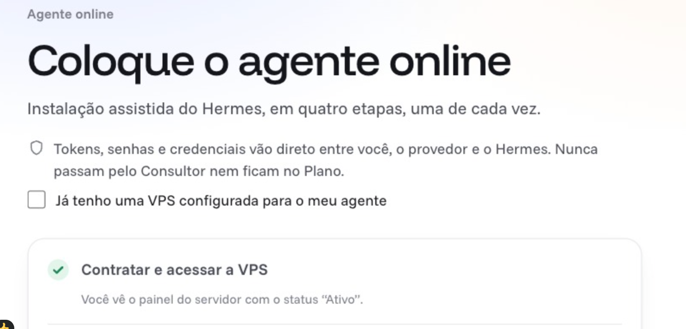
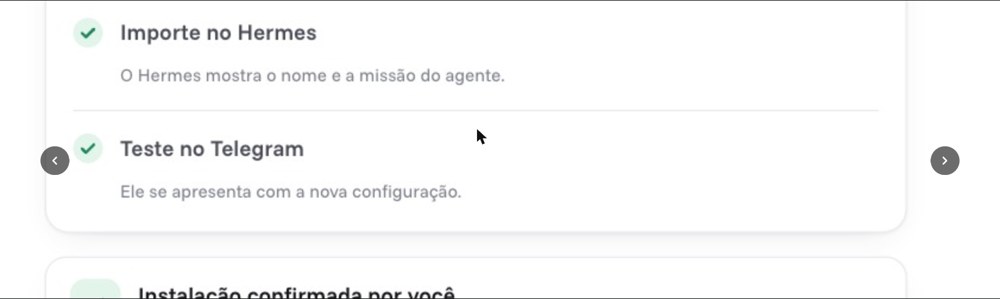
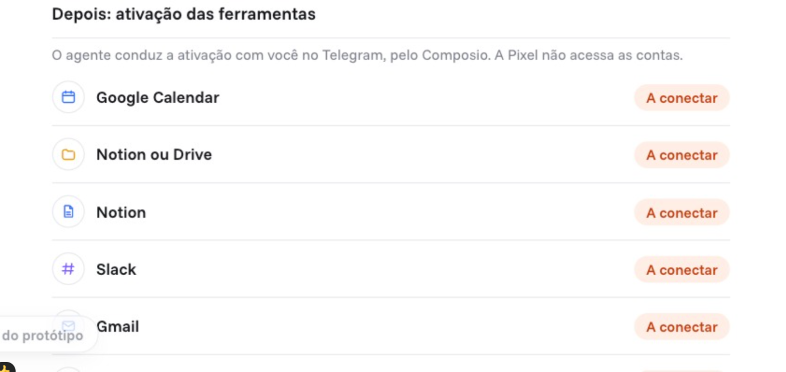
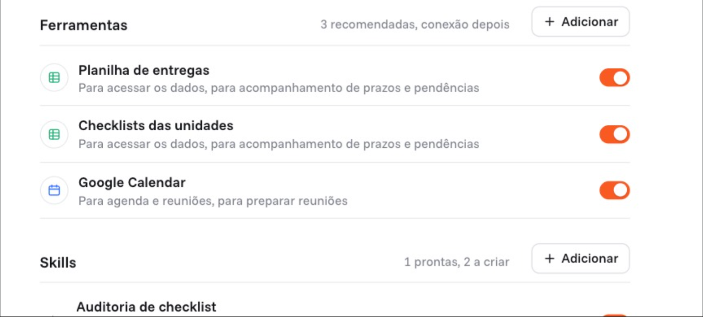
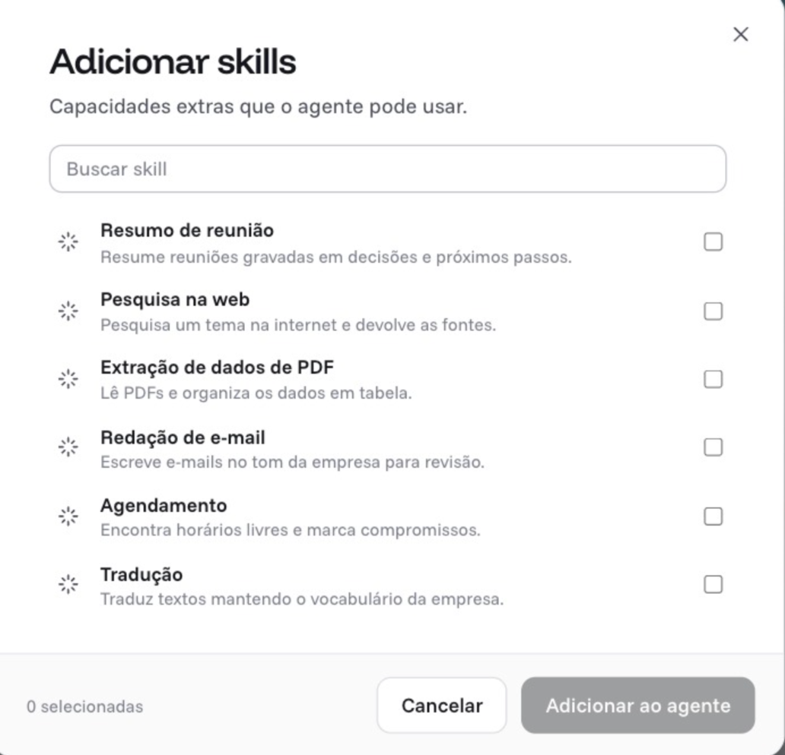
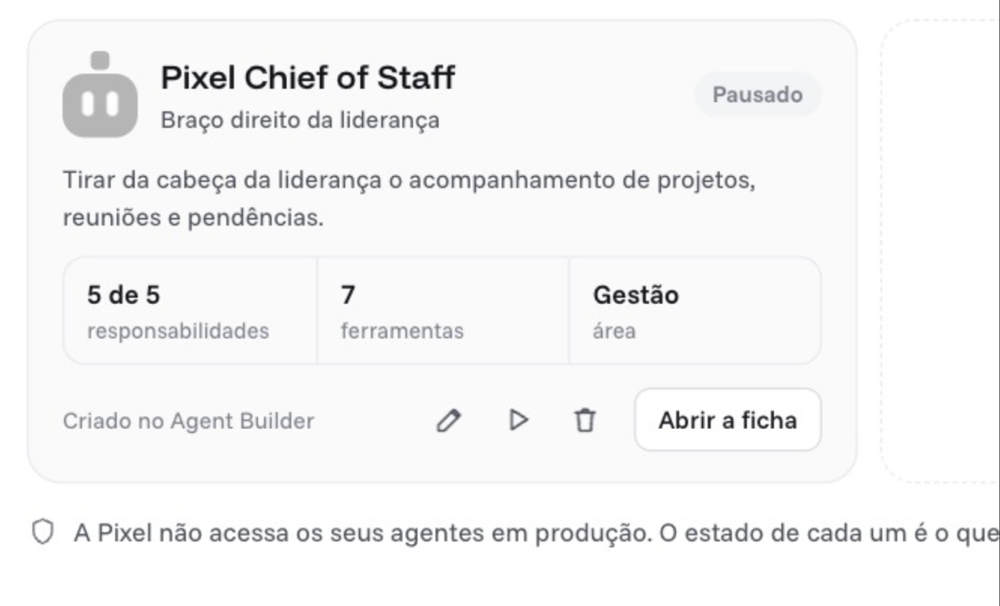
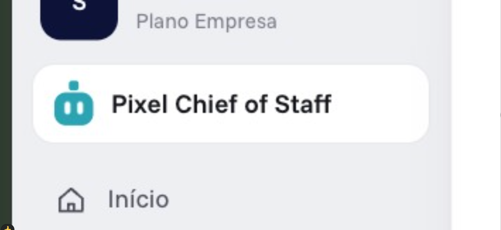
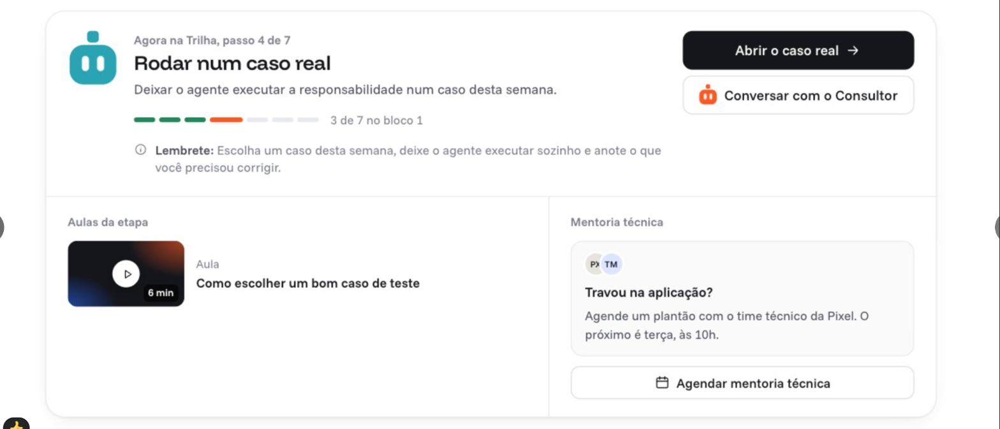
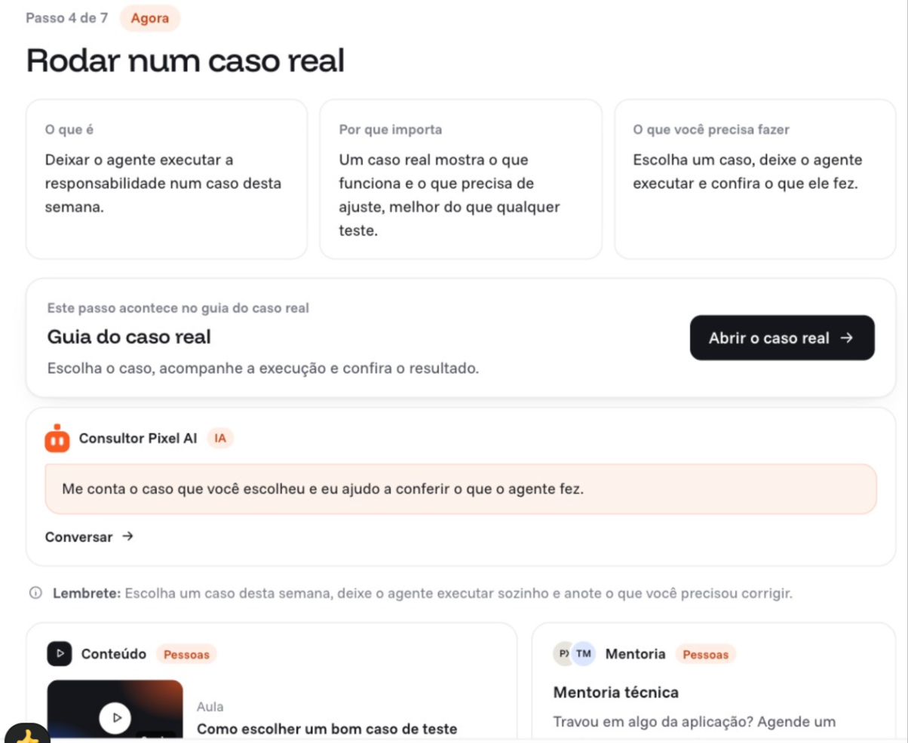

Checklist montado a partir da conversa de hoje no grupo, das 14h54 às 15h27, agrupado por tema da tela. Cada item traz a fala original e, quando enviado, o print que a acompanha.
"Então, eu só separaria a formação. Ao invés de juntar com hands-on e mentoria, deixar separado. E chamar essa aba de Mentorias talvez. A outra de 'Formação'. Talvez até colocar na trilha como uma tab."Cayo Syllos, 14h54–14h55
"Simm, até pq não passamos pra vocês, mas temos um plano no qual vendemos ela separadamente. E as outras abas ficam travadas. Aí podemos deixar ela talvez dentro de trilha com uma sub-tab com 'jornada agêntica' e uma com 'aulas'."Cayo Syllos, 14h56–14h58
"E o atalho para conversar com o consultor no wpp não ficou tão claro pra mim (...) acredito que pode ficar ou na home, logo no HEADER, ou então dentro do painel do consultor. Tiraria da home a parte de onboarding da empresa com horário, pq vamos ter acesso a essa informação — vai estar no Calendly."Cayo Syllos, 15h00–15h02
"Passei pra uma pessoa do time testar e passou um feedback que senti também. Faltou uma explicação sobre o que vamos fazer nessa etapa, o que é Hermes, e como que funciona esse processo."Cayo Syllos, 15h05

"Aqui só abriu pq eu abri, mas não precisava."Cayo Syllos, 15h18
"Aqui ao invés de apenas 'testar', levar o usuário para seguir o onboarding do starter kit."Cayo Syllos, 15h20

"Aqui tá com cara de botão para conectar. Tiraria isso e focaria, na última etapa, em explicar pra ele seguir o onboarding do starter kit e seguir."Cayo Syllos, 15h23

"Pessoal clicou no 'adicionar' das skills para adicionar uma ferramenta. Acho que faltou uma divisão mais clara."Cayo Syllos, 15h09

"Aqui vamos deixar as skills recomendadas com base no que ele definiu? Acho melhor pra ele não sair querendo 'ter tudo' e se perder. E talvez com uma opção de 'ver todas' para acessar mais." — "Uma ação de pular aqui também seria bom. Entendo que essa etapa é opcional, certo?"Cayo Syllos, 15h14–15h15

"E não faz sentido pausar e nem ele ficar na aba lateral pinado."Cayo Syllos, 15h24

"E não faz sentido registrar agente existente."Cayo Syllos, 15h25

"Aqui faltou só a explicação do passo."Cayo Syllos, 15h26

"Ao invés de 'para não esquecer', colocaria apenas um bloco descritivo colocando: 'O que você vai fazer agora'. Acredito que isso já vai ajudar a deixar mais clean."Cayo Syllos, 15h26 — sobre o card acima
"E deixaria da mesma forma aqui (nessa visualização ficou mais confusa)."Cayo Syllos, 15h27 — sobre uma proposta alternativa de layout
